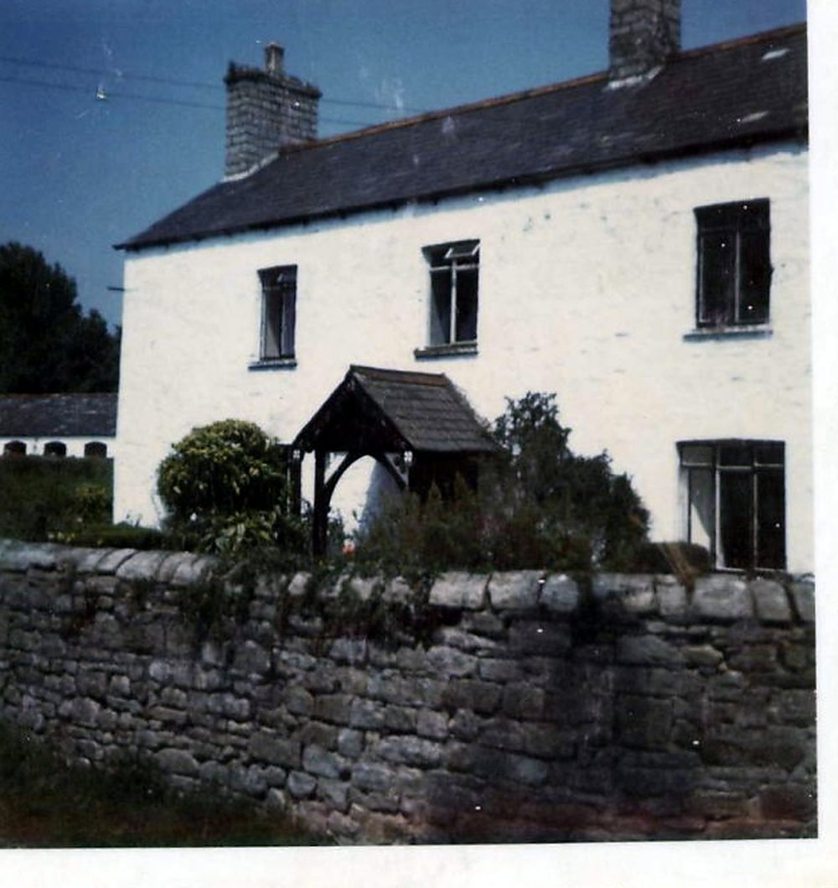

About this book
This book is about the place: the farmhouse called Tŷ Mawr, “the great house”, at Llandough near Penarth; its buildings, its land as estate maps and rate books record it, the ground beneath it and what was found there, and the way the building passed from notice to loss in 1988.
It leaves other subjects to other books. The eviction and the incidents around it are in Recorded Incidents; the people are in The Williams–Buckler Family; the court cases and the paper title have books of their own in preparation. The place-names Cedwyn, Cydwin and Cydfin are touched on here and will have a full book of their own.
Each record is given as a card: its date, its source and number in the Legal Wiki’s Evidence Register, the words of the record where they survive, what it shows, and what it does not.


The farmhouse front, porch and garden wall, from the farm’s own album (Part 1, no. 098). Source: Wayback Vault, album image.